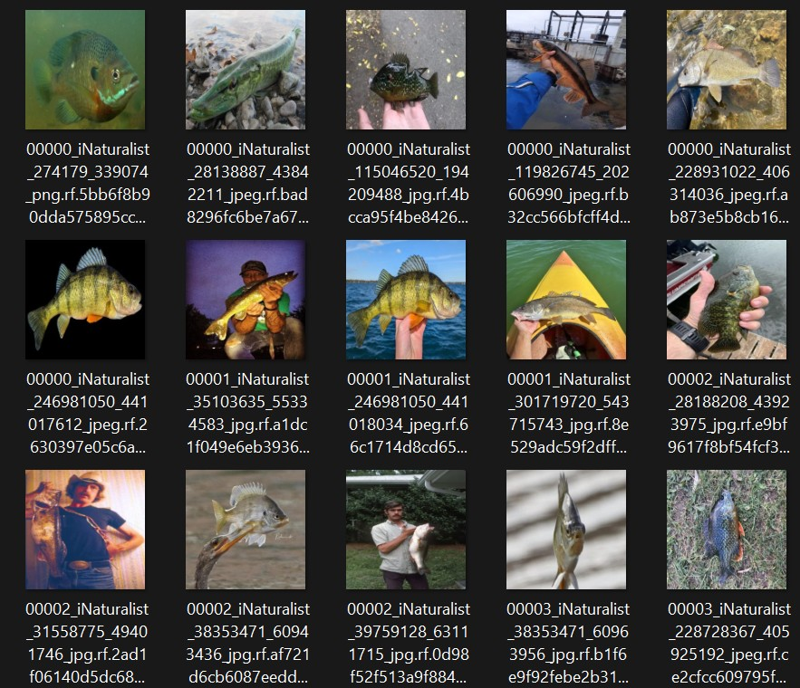
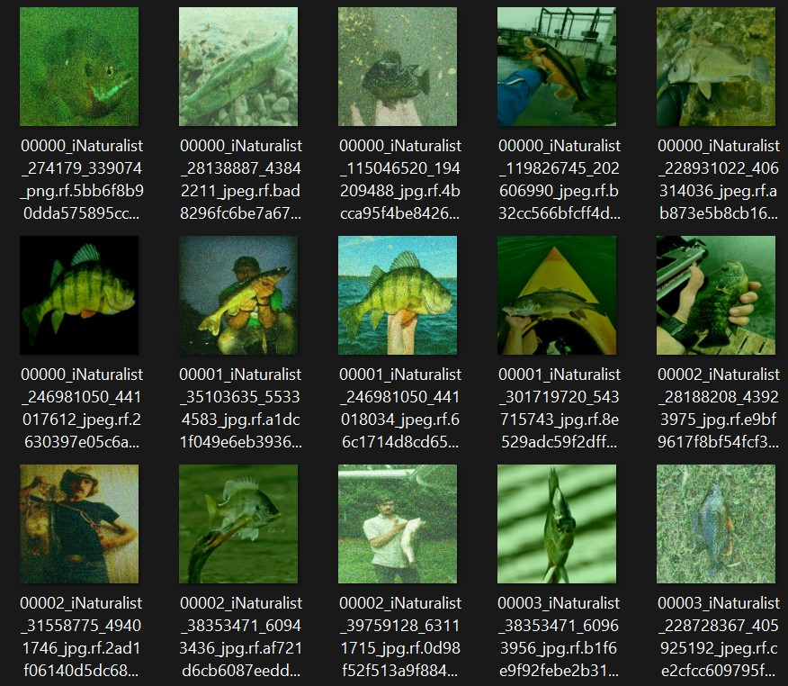
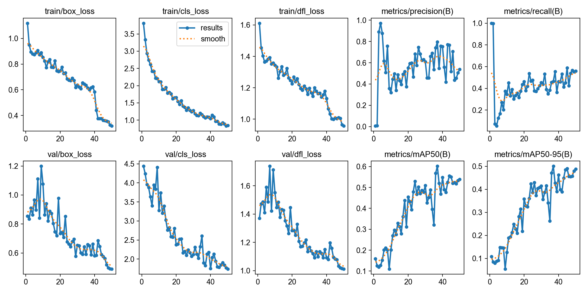
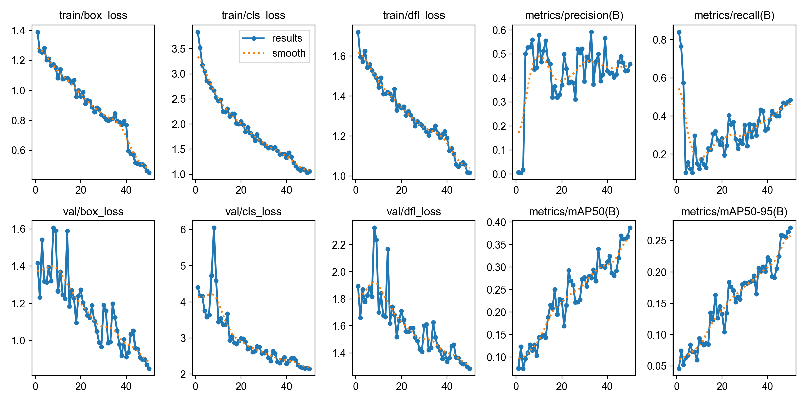
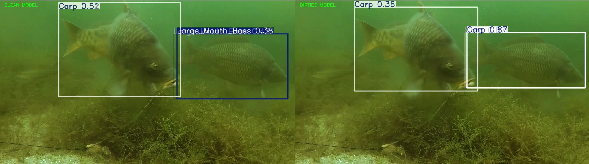
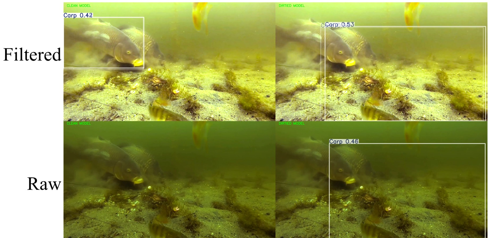

For our final project we were inspired to find a real life implementation for computer vision. A field that we've always been curious about but hadn't had the chance to explore until now was aquaculture and conservation. A few Aquatic invasive species threaten Madison area lakes, such as Zebra mussels and Spiny water fleas. To get a better perspective on what computer vision could do in this area, we talked to David Rowe.
A former Fish Supervisor at the Southern District of the DNR, David Row is now the Lake Management Supervisor at the Dane County Land & Water Resources Department. He told us about how Common Carp disrupt plant growth with their feeding patterns, turning high visibility parts of the lake into silty and low visibility ones. They are an invasive species and overproliferate, which endangers other native species. We discussed current forms of removal, using traps and trained personell to select and remove Carp from waterways during the annual spawning season. David gave us some ideas about how an autonomous system to identify and remove target species would lower the amount of man-hours needed to effectively lower carpo populations in a humane way. For this system we would use a trained object detection machine learning algorithm like "You Only Look Once" (YOLO). [Talk more about this here] Our first thought was in the conext of stream systems, where computer vision has been used in fish passageways in dams to remove migrating invasive species. These environments have high visibility and stark white bakcgrounds. So a image dataset pipleine for training was created to scrape fish images off the internet and impose the fish onto a white background. This would put the fish into an environment that they would be recognized by the trained YOLO algorithm. The details of this system are outlined here: Dataset Pipeline. However we realized that a novel system wouldn't be at a chokepoint but a passive trap that could capture fish in a specific lake throughout the year (while the ice is melted). So we modfied our strategy taking into account the lake environmentsLake environments present multiple challenges:
To accomodate for these conditions, we modified our image collection process to find images of select species, but did not remove the backgrounds. We manually labeled the fish in each image using RoboFlow, drawing bounding boxes to indicate to the algorithm where in the image each fish was located.
Next we wrote a python script using the library albumentation to add random amounts of green shift, blur, and noise to the dataset while retaining the labels in each image





despite these small differences, both models still struggled in the low visibility environment
We used the active filtering system outlined on this page: RTOS Image Recovery.
We ran both clear and muddy Yolo models on the filtered and unfiltered carp fishing videos and compared the results
